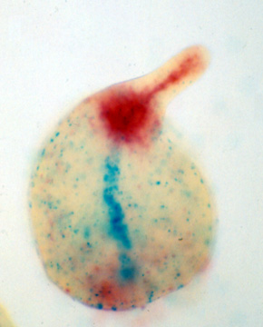
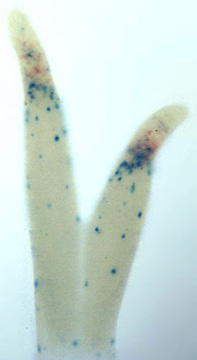
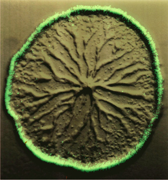
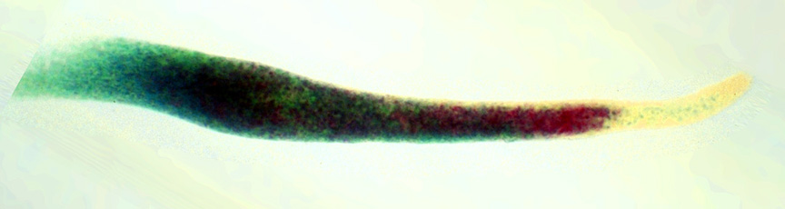

Click on an image to get a full sized picture
|
 Young culminant expressing labile gal (red) and stable gus (blue) from the ecmB promoter1. |
 Fingers expressing pst0-labile gal (red) and pst0-stable gus (blue)2. |
 Rpl11 promoter driving an instable GFP during aggregation3. |
|
 Slug expressing labile gal (red) and stable gus (blue) from the pspA promoter4. |
1. In the young culminant, red designates cells that have recently turned the promoter on, blue cells likely have turned the promoter off. Note the new expression zone in the vicinity of the future lower cup/basal disc.
2. In the first fingers, current expression is restricted to the posterior prestalk zone, but cells which previously expressed the gene are distributed more widely. This pattern, which is also seen in migrating slugs, is suggestive of a position-dependent signal in the posterior prestalk zone. However, it is known that cells can sort specifically to the posterior prestalk zone (Buehl and MacWilliams, 1991), and the pattern seen in this image could also arise if cells, in response to some internal clock, turn on both pst0-specific sorting and pst0-specific gene expression for a short period, then turn both properties off again.
3. RplL11, like most ribosomal protein genes, is turned off at the beginning of development (see Singleton et al., 1989; Agarwal et al., 1999; Urushihara et al., 2004). Here the RpL11 promoter drives an instable GFP; expression is seen in the growing edge but disappears when aggregation begins. Image from studies described in Deichsel et al., 1999.
4. The slug color pattern, which is usually seen in young slugs, suggests a circulation of cells within the prespore zone, with the pspA promoter maximally active in cells close to the prestalk-prespore boundary. Such an activity pattern could result from DIF breakdown within the prestalk zone. Note that the prestalk zone contains scattered cells with previous but no current pspA expression, the prespore-like cells (Harwood et al., 1991; Detterbeck et al., 1994).
Permission is hereby granted to use these images for any non-commercial use, such as inclusion in web pages, presentations, and reports.
{kind=link}
{kind=link}